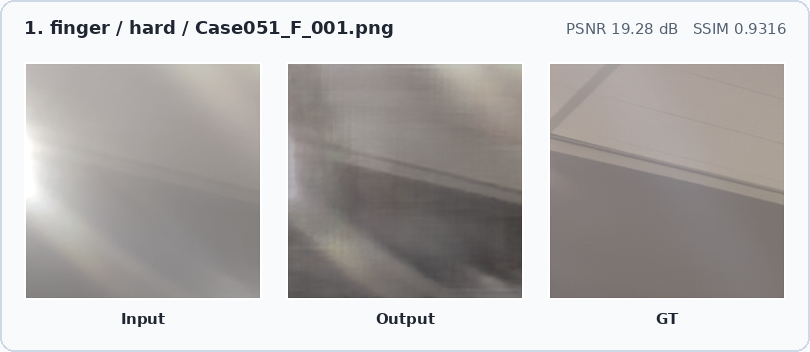
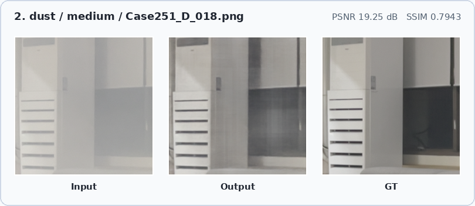
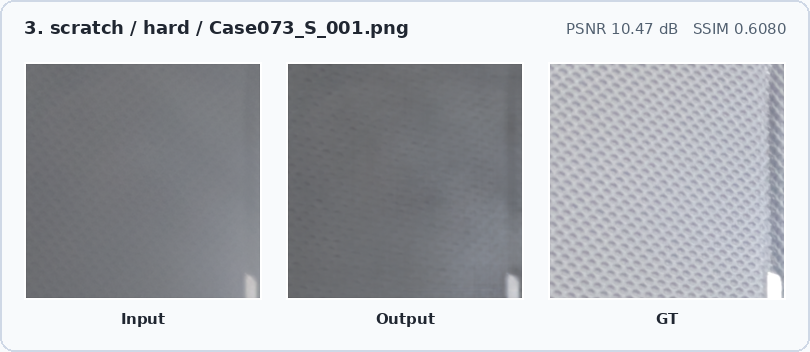
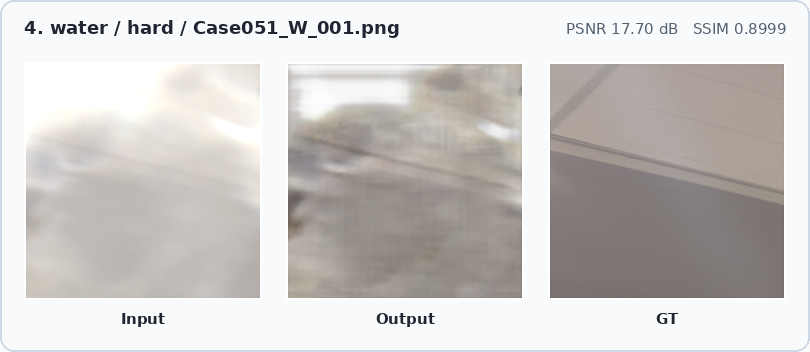
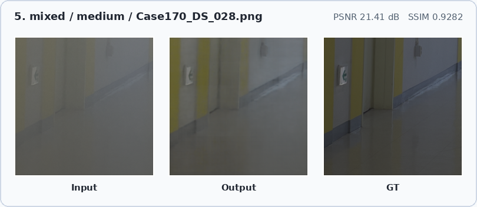

Main result
23.86 dB / 0.8419
Current best validation checkpoint: 256 crop, epoch 73
Comparison scope
AirNet / DiffUIR / D3Net
SIDL paper test results vs. our validation results
Best setting
256×256 crop
Continued 256 training improved both PSNR and SSIM
Main bottleneck
Hard Dust / Mixed
Hard split improved, but severe local and mixed contamination remains difficult
1. Problem & Dataset
SIDL is a real-world paired dataset for restoring smartphone images captured through contaminated lenses. The task is different from ordinary denoising or deblurring because lens contamination produces both local artifacts and global contrast degradation.
cleandustfinger
waterscratchmixed
- Data
- 512×512 patchified degraded-clean pairs
- Validation
- Type × difficulty split, PSNR / SSIM
- Goal
- Analyze D3Net adaptation, not claim SIDL SOTA
2. Method: D3Net Adaptation
D3Net predicts a residual correction: restored image = input + residual. Frequency-domain cues and dynamic decomposition blocks allow degradation-aware processing for mixed and local contamination patterns.
3. Experimental Setup
- Model
- D3Net, scratch training, 12 ADB blocks
- Main run
- 256×256 random crop, batch 8, LR 1e-4
- Best
- Continued 256 training, epoch 73
- Loss / Opt.
- L1 loss, Adam β=(0.9, 0.999), cosine LR
- Validation
- 512×512 center crop, image-wise PSNR / SSIM
- Scope
- Limited-budget adaptation, not SIDL SOTA claim
4. SIDL Paper Baseline Comparison
AirNet and DiffUIR are SIDL paper test-set values. D3Net is our epoch-73 validation checkpoint, so this is task context rather than a strict leaderboard comparison.
| Method | Level | Clean | Dust | Finger | Water | Scratch | Mixed | Avg. |
|---|
| AirNet | Easy | 27.10/0.9329 | 23.40/0.8669 | 25.10/0.8708 | 24.85/0.8658 | 25.84/0.8917 | 25.30/0.8422 | 25.26/0.8784 |
| Medium | 26.13/0.8899 | 19.69/0.7577 | 22.53/0.8191 | 20.36/0.7656 | 21.24/0.8051 | 16.79/0.7542 | 21.12/0.7986 |
| Hard | 23.79/0.8527 | 16.18/0.7350 | 15.83/0.6432 | 16.64/0.7449 | 18.13/0.7975 | 14.48/0.7047 | 17.50/0.7463 |
| DiffUIR | Easy | 34.51/0.9785 | 26.96/0.9276 | 28.82/0.9331 | 27.42/0.9220 | 30.14/0.9375 | 28.22/0.9021 | 29.34/0.9335 |
| Medium | 33.25/0.9375 | 22.11/0.8325 | 26.16/0.8856 | 24.65/0.8647 | 27.07/0.9105 | 20.32/0.8368 | 25.36/0.8786 |
| Hard | 29.47/0.9366 | 20.38/0.8602 | 18.93/0.7763 | 19.91/0.8500 | 21.27/0.8599 | 18.97/0.8409 | 21.71/0.8533 |
| D3Net ours | Easy | 32.78/0.9542 | 25.07/0.8859 | 24.59/0.7733 | 26.38/0.9196 | 27.84/0.8980 | 23.32/0.8552 | 26.66/0.8810 |
| Medium | 30.26/0.9424 | 24.03/0.8797 | 23.69/0.8467 | 24.05/0.8577 | 27.41/0.9126 | 22.56/0.8869 | 25.33/0.8877 |
| Hard | 27.70/0.8502 | 17.05/0.7086 | 20.23/0.7698 | 20.22/0.7986 | 20.38/0.7477 | 17.98/0.7900 | 20.59/0.7775 |
5. Our Ablation
| Run | Init. | Crop | Epoch | PSNR | SSIM |
|---|
| 128 baseline | scratch | 128 | 34 | 23.33 | 0.8357 |
| 256 main | scratch | 256 | 34 | 23.82 | 0.8398 |
| 256 continued | latest | 256 | 73 | 23.86 | 0.8419 |
| 256 low-LR | 256 best | 256 | 3 | 23.76 | 0.8409 |
| 512 refinement | 256 best | 512 | 2 | 23.27 | 0.8336 |
12823.33
25623.82
256 cont.23.86
256 polish23.76
51223.27
6. Failure Analysis
| Type | Avg. PSNR | Avg. SSIM |
|---|
| Clean | 29.87 | 0.9125 |
| Dust | 21.90 | 0.8217 |
| Finger | 21.97 | 0.7897 |
| Water | 22.87 | 0.8433 |
| Scratch | 25.08 | 0.8505 |
| Mixed | 20.67 | 0.8311 |
Hard Dust: 17.05 / 0.7086
Hard Mixed: 17.98 / 0.7900
Continued training improved Hard difficulty from 20.33 to 20.59 dB, while Easy PSNR dropped from 27.00 to 26.66 dB. This suggests a cross-difficulty trade-off.
7. Qualitative Results
Each panel shows input, D3Net output, and GT from the report assets.





8. Takeaways
Current bestEpoch 73 reaches 23.86 dB / 0.8419 on the validation split.
Trade-off observedHard restoration improves, while Easy PSNR slightly decreases.
Future directionLoss-metric mismatch and difficulty-aware training remain open issues.